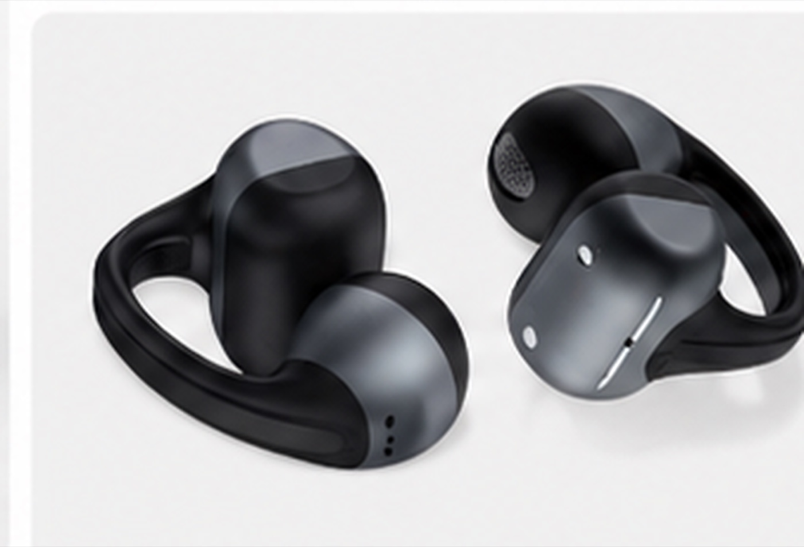
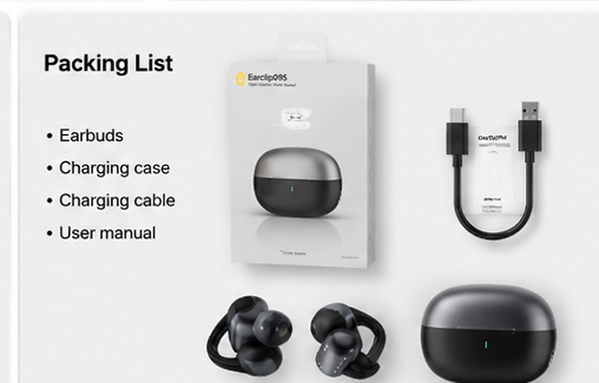

Choose Earclip09S
Review Earclip09S when the line needs an open-ear or earclip wearing story built around comfort, awareness and visible lifestyle use.

Open-ear TWS sourcing guide
Many buyers start with product photos, chipset and a quick specification comparison. For open-ear clip-style TWS earbuds, that can miss the fit, leakage, call clarity, charging-case and packaging details that decide whether a sample is ready for a real buyer review.

Short answer
Open-ear TWS earbuds are not evaluated like a basic in-ear earbud. A useful sample review should test how the earclip sits, how much sound escapes, how calls behave, how the charging case works and whether the packing list fits the buyer's sales channel. If the buyer also wants a more familiar sealed wearing direction, compare the open-ear sample with TWS044F in-ear TWS earbuds before deciding the first sample request.
Buyer decision
Open-ear and in-ear TWS products answer different buyer problems. Comparing both directions early helps importers decide which sample supports the next product launch more clearly.
Review Earclip09S when the line needs an open-ear or earclip wearing story built around comfort, awareness and visible lifestyle use.
Review TWS044F when the line needs a compact in-ear TWS direction with case, wearing-fit, lifestyle and packing-list image evidence.
The broader TWS comparison guide helps when the buyer has not decided between in-ear, open-ear or earclip use case.
Target use
Earclip-style open-ear earbuds can support several product-line directions, but each buyer should test the same model against a clear channel role.
Open-ear TWS can work as a comfort-led model beside in-ear earbuds, gaming headsets or Bluetooth speakers.
Review whether the wearing style, case, colors and accessories are easy to explain to regional customers.
Check product images, color variants and package contents before preparing listing photography or content.
Open-ear models can be useful when the buyer needs daily-use comfort, office use or outdoor awareness as the main product angle.
Buyer checklist
Clip-on TWS earbuds need a balance between stable wearing and comfort. Check the bridge elasticity, surface texture and whether the earclip causes pressure after real use.
Open-ear structures naturally behave differently from sealed in-ear earbuds. Test a sample in a quiet room and ask whether the listening level is acceptable for nearby people.
Because the microphone position differs from stem-style earbuds, buyers should test voice clarity in office, street and commuting-style environments before making claims.
Review listed battery information together with case opening feel, magnetic retention, contact-pin alignment and charging indicator behavior.
Compare color variants, coating consistency and case finish before confirming logo placement or retail photography direction.
Confirm earbuds, charging case, cable, manual language, retail box, inner tray and any optional accessories before packaging artwork.
Send destination market, sales channel, model interest, quantity range, color direction, sample timing, branding needs and document questions.
Review table
| Check | What buyers should review | Why it matters |
|---|---|---|
| Fit | Earclip tension, surface feel, wearing stability and comfort after real use. | Comfort is a key reason buyers choose open-ear earbuds. |
| Leakage | Listening level in a quiet room and nearby-person awareness. | Open-ear products need a clear use-case expectation. |
| Calls | Voice clarity, wind or background-noise behavior and call scenario. | Daily-use buyers often care about calls as much as music. |
| Battery and case | Listed battery details, case capacity, magnets, pins and indicator behavior. | The case affects perceived value and daily handling. |
| Color and finish | Black, white, color options, coating consistency and logo location. | Private-label buyers need a reliable visual direction. |
| Packing list | Cable, manual, retail box, inner tray and optional accessory scope. | Packaging questions should be clear before artwork. |
| Compatibility | iOS, Android and PC pairing checks against the selected sample version. | Compatibility wording should match documented use. |
Reference model
For buyers comparing an open-ear earclip direction, TALRIVO Earclip09S provides a concrete reference for reviewing shape, case, colors, packing-list details and listed specifications before an RFQ.


| Listed chipset | Bluetrum 5656C |
|---|---|
| Bluetooth version | Bluetooth 6.0 |
| Compatibility | Android, iOS and PC |
| Operation distance | About 10 m |
| Charging case battery | 300 mAh |
| Earphone battery | 45 mAh |
| Listed talk time | About 30 hours |
| Driver diameter | 11 mm |
| Impedance | 32 ohm |
Related pages
Compare in-ear, open-ear and earclip directions before requesting samples.
Review the model page for supplied images, listed specifications, color options and sample discussion.
Compare a compact in-ear TWS direction against the open-ear Earclip09S sample direction.
The guide helps buyers decide whether an in-ear or open-ear sample should come first.
The broader TWS checklist compares wearing style, case design, branding and RFQ details.
Review how TWS earbuds can fit a wider branded audio range.
Prepare target market, sales channel, quantity range, sample timing, color, logo and packaging questions.
FAQ
In-ear TWS earbuds usually depend on a more sealed ear-canal fit. Open-ear and earclip TWS earbuds place more emphasis on comfort, situational awareness, fit stability, sound leakage control, call use, case design and packaging readiness.
Buyers should check earclip fit and comfort, sound leakage, call clarity, battery and charging-case behavior, color and finish consistency, packing-list details, cross-platform compatibility and RFQ information.
Yes. After the model and sample version are clear, buyers can discuss logo area, case branding, color direction, manual language, retail box design, inner tray direction and package contents.
Buyers should share target market, sales channel, estimated quantity range, color direction, sample timing, logo needs, packaging depth and document questions so the supplier can discuss realistic project terms for the selected model version.
Share your target market, sales channel, color direction, quantity range, sample timing, logo needs and packaging questions. TALRIVO can help organize the Earclip09S sample discussion before quotation.